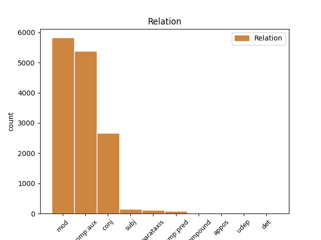
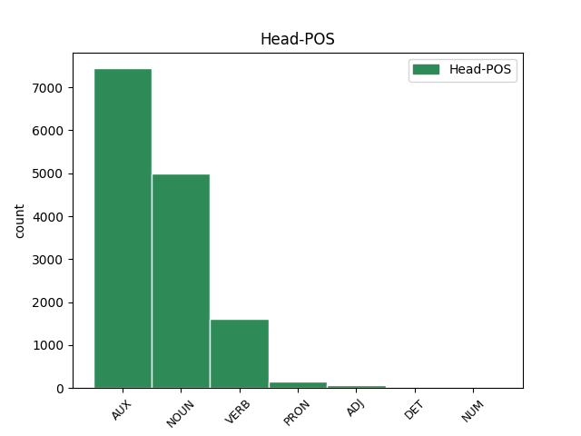
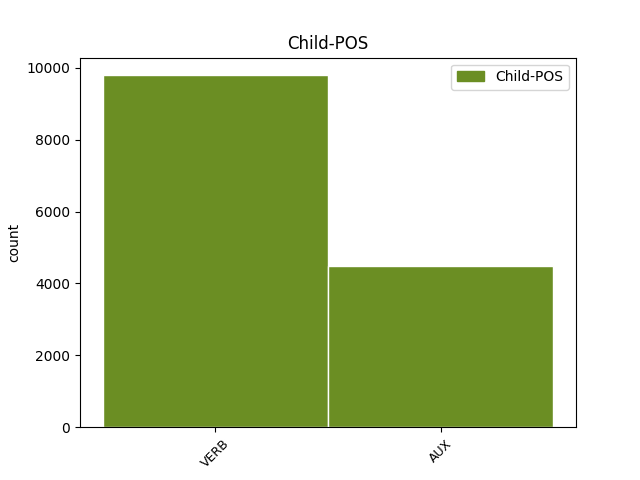

Distribution of features within this leaf



Agreement Rules sorted by frequency.
- When the dependent token is the complement for auxiliary(comp:aux) of the head token, and the dependent token is VERB.
1 El _ _ _ _ 0 _ _ _
2 PSOE _ _ _ _ 0 _ _ _
3 ha haver AUX AUX Mood=Ind|Number=Sing|Person=3|Tense=Pres|VerbForm=Fin 0 _ _ _
4 criticat criticar VERB VERB Gender=Masc|Number=Sing|Tense=Past|VerbForm=Part 3 comp:aux _ _
5 l' _ _ _ _ 0 _ _ _
6 anunci _ _ _ _ 0 _ _ _
7 de _ _ _ _ 0 _ _ _
8 la _ _ _ _ 0 _ _ _
9 designació _ _ _ _ 0 _ _ _
10 de _ _ _ _ 0 _ _ _
11 Lucas _ _ _ _ 0 _ _ _
12 , _ _ _ _ 0 _ _ _
13 que _ _ _ _ 0 _ _ _
14 dies _ _ _ _ 0 _ _ _
15 abans _ _ _ _ 0 _ _ _
16 va _ _ _ _ 0 _ _ _
17 fer _ _ _ _ 0 _ _ _
18 José _ _ _ _ 0 _ _ _
19 María _ _ _ _ 0 _ _ _
20 Aznar _ _ _ _ 0 _ _ _
21 , _ _ _ _ 0 _ _ _
22 perquè _ _ _ _ 0 _ _ _
23 entén _ _ _ _ 0 _ _ _
24 que _ _ _ _ 0 _ _ _
25 va _ _ _ _ 0 _ _ _
26 ser _ _ _ _ 0 _ _ _
27 una _ _ _ _ 0 _ _ _
28 falta _ _ _ _ 0 _ _ _
29 de _ _ _ _ 0 _ _ _
30 respecte _ _ _ _ 0 _ _ _
31 a _ _ _ _ 0 _ _ _
32 la _ _ _ _ 0 _ _ _
33 Cambra _ _ _ _ 0 _ _ _
34 . _ _ _ _ 0 _ _ _
1 En _ _ _ _ 0 _ _ _
2 aquesta _ _ _ _ 0 _ _ _
3 ocasió _ _ _ _ 0 _ _ _
4 ho _ _ _ _ 0 _ _ _
5 farà fer VERB VERB Mood=Ind|Number=Sing|Person=3|Tense=Fut|VerbForm=Fin 0 _ _ _
6 davant _ _ _ _ 0 _ _ _
7 el _ _ _ _ 0 _ _ _
8 ministre _ _ _ _ 0 _ _ _
9 d' _ _ _ _ 0 _ _ _
10 Administracions _ _ _ _ 0 _ _ _
11 Públiques _ _ _ _ 0 _ _ _
12 , _ _ _ _ 0 _ _ _
13 Javier _ _ _ _ 0 _ _ _
14 Arenas _ _ _ _ 0 _ _ _
15 , _ _ _ _ 0 _ _ _
16 amb _ _ _ _ 0 _ _ _
17 qui _ _ _ _ 0 _ _ _
18 es _ _ _ _ 0 _ _ _
19 reunirà reunir VERB VERB Mood=Ind|Number=Sing|Person=3|Tense=Fut|VerbForm=Fin 5 mod _ _
20 dimecres _ _ _ _ 0 _ _ _
21 . _ _ _ _ 0 _ _ _
1 El _ _ _ _ 0 _ _ _
2 PSOE _ _ _ _ 0 _ _ _
3 ha _ _ _ _ 0 _ _ _
4 criticat _ _ _ _ 0 _ _ _
5 l' _ _ _ _ 0 _ _ _
6 anunci anunci NOUN NOUN Gender=Masc|Number=Sing 0 _ _ _
7 de _ _ _ _ 0 _ _ _
8 la _ _ _ _ 0 _ _ _
9 designació _ _ _ _ 0 _ _ _
10 de _ _ _ _ 0 _ _ _
11 Lucas _ _ _ _ 0 _ _ _
12 , _ _ _ _ 0 _ _ _
13 que _ _ _ _ 0 _ _ _
14 dies _ _ _ _ 0 _ _ _
15 abans _ _ _ _ 0 _ _ _
16 va anar AUX AUX Mood=Ind|Number=Sing|Person=3|Tense=Pres|VerbForm=Fin 6 mod _ _
17 fer _ _ _ _ 0 _ _ _
18 José _ _ _ _ 0 _ _ _
19 María _ _ _ _ 0 _ _ _
20 Aznar _ _ _ _ 0 _ _ _
21 , _ _ _ _ 0 _ _ _
22 perquè _ _ _ _ 0 _ _ _
23 entén _ _ _ _ 0 _ _ _
24 que _ _ _ _ 0 _ _ _
25 va _ _ _ _ 0 _ _ _
26 ser _ _ _ _ 0 _ _ _
27 una _ _ _ _ 0 _ _ _
28 falta _ _ _ _ 0 _ _ _
29 de _ _ _ _ 0 _ _ _
30 respecte _ _ _ _ 0 _ _ _
31 a _ _ _ _ 0 _ _ _
32 la _ _ _ _ 0 _ _ _
33 Cambra _ _ _ _ 0 _ _ _
34 . _ _ _ _ 0 _ _ _
1 Ana _ _ _ _ 0 _ _ _
2 Palacio _ _ _ _ 0 _ _ _
3 va anar AUX AUX Mood=Ind|Number=Sing|Person=3|Tense=Pres|VerbForm=Fin 0 _ _ _
4 qualificar _ _ _ _ 0 _ _ _
5 la _ _ _ _ 0 _ _ _
6 trobada _ _ _ _ 0 _ _ _
7 amb _ _ _ _ 0 _ _ _
8 Jack _ _ _ _ 0 _ _ _
9 Straw _ _ _ _ 0 _ _ _
10 de _ _ _ _ 0 _ _ _
11 " _ _ _ _ 0 _ _ _
12 molt _ _ _ _ 0 _ _ _
13 fructífera _ _ _ _ 0 _ _ _
14 " _ _ _ _ 0 _ _ _
15 , _ _ _ _ 0 _ _ _
16 i _ _ _ _ 0 _ _ _
17 va anar AUX AUX Mood=Ind|Number=Sing|Person=3|Tense=Pres|VerbForm=Fin 3 conj _ _
18 manifestar _ _ _ _ 0 _ _ _
19 que _ _ _ _ 0 _ _ _
20 havia _ _ _ _ 0 _ _ _
21 percebut _ _ _ _ 0 _ _ _
22 una _ _ _ _ 0 _ _ _
23 voluntat _ _ _ _ 0 _ _ _
24 política _ _ _ _ 0 _ _ _
25 britànica _ _ _ _ 0 _ _ _
26 per _ _ _ _ 0 _ _ _
27 arribar _ _ _ _ 0 _ _ _
28 a _ _ _ _ 0 _ _ _
29 un _ _ _ _ 0 _ _ _
30 acord _ _ _ _ 0 _ _ _
31 . _ _ _ _ 0 _ _ _
1 El _ _ _ _ 0 _ _ _
2 projecte _ _ _ _ 0 _ _ _
3 que _ _ _ _ 0 _ _ _
4 està _ _ _ _ 0 _ _ _
5 elaborant _ _ _ _ 0 _ _ _
6 el _ _ _ _ 0 _ _ _
7 Govern _ _ _ _ 0 _ _ _
8 central _ _ _ _ 0 _ _ _
9 suprimeix suprimir VERB VERB Mood=Ind|Number=Sing|Person=3|Tense=Pres|VerbForm=Fin 0 _ _ _
10 aquesta _ _ _ _ 0 _ _ _
11 funció _ _ _ _ 0 _ _ _
12 dels _ _ _ _ 0 _ _ _
13 regidors _ _ _ _ 0 _ _ _
14 i _ _ _ _ 0 _ _ _
15 l' _ _ _ _ 0 _ _ _
16 atribueix atribuir VERB VERB Mood=Ind|Number=Sing|Person=3|Tense=Pres|VerbForm=Fin 9 conj _ _
17 exclusivament _ _ _ _ 0 _ _ _
18 a _ _ _ _ 0 _ _ _
19 l' _ _ _ _ 0 _ _ _
20 alcalde _ _ _ _ 0 _ _ _
21 , _ _ _ _ 0 _ _ _
22 que _ _ _ _ 0 _ _ _
23 serà _ _ _ _ 0 _ _ _
24 l' _ _ _ _ 0 _ _ _
25 encarregat _ _ _ _ 0 _ _ _
26 de _ _ _ _ 0 _ _ _
27 dirigir _ _ _ _ 0 _ _ _
28 els _ _ _ _ 0 _ _ _
29 components _ _ _ _ 0 _ _ _
30 del _ _ _ _ 0 _ _ _
31 seu _ _ _ _ 0 _ _ _
32 govern _ _ _ _ 0 _ _ _
33 . _ _ _ _ 0 _ _ _
1 Garzón _ _ _ _ 0 _ _ _
2 pretén _ _ _ _ 0 _ _ _
3 demostrar _ _ _ _ 0 _ _ _
4 , _ _ _ _ 0 _ _ _
5 amb _ _ _ _ 0 _ _ _
6 el _ _ _ _ 0 _ _ _
7 suport _ _ _ _ 0 _ _ _
8 de _ _ _ _ 0 _ _ _
9 documents _ _ _ _ 0 _ _ _
10 interns _ _ _ _ 0 _ _ _
11 d' _ _ _ _ 0 _ _ _
12 ETA _ _ _ _ 0 _ _ _
13 , _ _ _ _ 0 _ _ _
14 que _ _ _ _ 0 _ _ _
15 la _ _ _ _ 0 _ _ _
16 formació _ _ _ _ 0 _ _ _
17 política _ _ _ _ 0 _ _ _
18 ha haver AUX AUX Mood=Ind|Number=Sing|Person=3|Tense=Pres|VerbForm=Fin 19 comp:aux _ _
19 estat ser AUX AUX Gender=Masc|Number=Sing|Tense=Past|VerbForm=Part 0 _ _ _
20 controlada _ _ _ _ 0 _ _ _
21 des _ _ _ _ 0 _ _ _
22 dels _ _ _ _ 0 _ _ _
23 seus _ _ _ _ 0 _ _ _
24 orígens _ _ _ _ 0 _ _ _
25 per _ _ _ _ 0 _ _ _
26 la _ _ _ _ 0 _ _ _
27 banda _ _ _ _ 0 _ _ _
28 terrorista _ _ _ _ 0 _ _ _
29 , _ _ _ _ 0 _ _ _
30 i _ _ _ _ 0 _ _ _
31 que _ _ _ _ 0 _ _ _
32 aquest _ _ _ _ 0 _ _ _
33 control _ _ _ _ 0 _ _ _
34 ha _ _ _ _ 0 _ _ _
35 augmentat _ _ _ _ 0 _ _ _
36 amb _ _ _ _ 0 _ _ _
37 els _ _ _ _ 0 _ _ _
38 anys _ _ _ _ 0 _ _ _
39 fins _ _ _ _ 0 _ _ _
40 al _ _ _ _ 0 _ _ _
41 punt _ _ _ _ 0 _ _ _
42 que _ _ _ _ 0 _ _ _
43 no _ _ _ _ 0 _ _ _
44 hi _ _ _ _ 0 _ _ _
45 ha _ _ _ _ 0 _ _ _
46 diferències _ _ _ _ 0 _ _ _
47 entre _ _ _ _ 0 _ _ _
48 totes _ _ _ _ 0 _ _ _
49 dues _ _ _ _ 0 _ _ _
50 . _ _ _ _ 0 _ _ _
1 Qui _ _ _ _ 0 _ _ _
2 s' _ _ _ _ 0 _ _ _
3 envolta envoltar VERB VERB Mood=Ind|Number=Sing|Person=3|Tense=Pres|VerbForm=Fin 7 subj _ _
4 de _ _ _ _ 0 _ _ _
5 gossos _ _ _ _ 0 _ _ _
6 agressius _ _ _ _ 0 _ _ _
7 ha haver AUX AUX Mood=Ind|Number=Sing|Person=3|Tense=Pres|VerbForm=Fin 0 _ _ _
8 de _ _ _ _ 0 _ _ _
9 ser _ _ _ _ 0 _ _ _
10 conseqüent _ _ _ _ 0 _ _ _
11 i _ _ _ _ 0 _ _ _
12 prendre _ _ _ _ 0 _ _ _
13 les _ _ _ _ 0 _ _ _
14 mesures _ _ _ _ 0 _ _ _
15 necessàries _ _ _ _ 0 _ _ _
16 perquè _ _ _ _ 0 _ _ _
17 en _ _ _ _ 0 _ _ _
18 cap _ _ _ _ 0 _ _ _
19 cas _ _ _ _ 0 _ _ _
20 i _ _ _ _ 0 _ _ _
21 sota _ _ _ _ 0 _ _ _
22 cap _ _ _ _ 0 _ _ _
23 circumstància _ _ _ _ 0 _ _ _
24 puguin _ _ _ _ 0 _ _ _
25 fer _ _ _ _ 0 _ _ _
26 mal _ _ _ _ 0 _ _ _
27 , _ _ _ _ 0 _ _ _
28 i _ _ _ _ 0 _ _ _
29 això _ _ _ _ 0 _ _ _
30 sense _ _ _ _ 0 _ _ _
31 pal·liatius _ _ _ _ 0 _ _ _
32 . _ _ _ _ 0 _ _ _
1 Per _ _ _ _ 0 _ _ _
2 tant _ _ _ _ 0 _ _ _
3 , _ _ _ _ 0 _ _ _
4 diu dir VERB VERB Mood=Ind|Number=Sing|Person=3|Tense=Pres|VerbForm=Fin 9 parataxis _ _
5 Garzón _ _ _ _ 0 _ _ _
6 , _ _ _ _ 0 _ _ _
7 KAS _ _ _ _ 0 _ _ _
8 " _ _ _ _ 0 _ _ _
9 dirigeix dirigir VERB VERB Mood=Ind|Number=Sing|Person=3|Tense=Pres|VerbForm=Fin 0 _ _ _
10 i _ _ _ _ 0 _ _ _
11 coordina _ _ _ _ 0 _ _ _
12 els _ _ _ _ 0 _ _ _
13 interessos _ _ _ _ 0 _ _ _
14 econòmics _ _ _ _ 0 _ _ _
15 d' _ _ _ _ 0 _ _ _
16 ETA _ _ _ _ 0 _ _ _
17 relacionats _ _ _ _ 0 _ _ _
18 amb _ _ _ _ 0 _ _ _
19 l' _ _ _ _ 0 _ _ _
20 impost _ _ _ _ 0 _ _ _
21 revolucionari _ _ _ _ 0 _ _ _
22 " _ _ _ _ 0 _ _ _
23 a _ _ _ _ 0 _ _ _
24 través _ _ _ _ 0 _ _ _
25 d' _ _ _ _ 0 _ _ _
26 Etxebarria _ _ _ _ 0 _ _ _
27 i _ _ _ _ 0 _ _ _
28 Olarra _ _ _ _ 0 _ _ _
29 , _ _ _ _ 0 _ _ _
30 responsables _ _ _ _ 0 _ _ _
31 coordinadors _ _ _ _ 0 _ _ _
32 de _ _ _ _ 0 _ _ _
33 KAS _ _ _ _ 0 _ _ _
34 i _ _ _ _ 0 _ _ _
35 dirigents _ _ _ _ 0 _ _ _
36 de _ _ _ _ 0 _ _ _
37 HB _ _ _ _ 0 _ _ _
38 , _ _ _ _ 0 _ _ _
39 " _ _ _ _ 0 _ _ _
40 seguint _ _ _ _ 0 _ _ _
41 els _ _ _ _ 0 _ _ _
42 criteris _ _ _ _ 0 _ _ _
43 marcats _ _ _ _ 0 _ _ _
44 per _ _ _ _ 0 _ _ _
45 ETA _ _ _ _ 0 _ _ _
46 el _ _ _ _ 0 _ _ _
47 1991 _ _ _ _ 0 _ _ _
48 " _ _ _ _ 0 _ _ _
49 . _ _ _ _ 0 _ _ _
1 Segons _ _ _ _ 0 _ _ _
2 l' _ _ _ _ 0 _ _ _
3 opinió _ _ _ _ 0 _ _ _
4 de _ _ _ _ 0 _ _ _
5 García _ _ _ _ 0 _ _ _
6 Escudero _ _ _ _ 0 _ _ _
7 , _ _ _ _ 0 _ _ _
8 els _ _ _ _ 0 _ _ _
9 socialistes _ _ _ _ 0 _ _ _
10 " _ _ _ _ 0 _ _ _
11 no _ _ _ _ 0 _ _ _
12 l' _ _ _ _ 0 _ _ _
13 haurien _ _ _ _ 0 _ _ _
14 de _ _ _ _ 0 _ _ _
15 veure _ _ _ _ 0 _ _ _
16 malament _ _ _ _ 0 _ _ _
17 " _ _ _ _ 0 _ _ _
18 ja _ _ _ _ 0 _ _ _
19 que _ _ _ _ 0 _ _ _
20 , _ _ _ _ 0 _ _ _
21 va _ _ _ _ 0 _ _ _
22 assegurar _ _ _ _ 0 _ _ _
23 , _ _ _ _ 0 _ _ _
24 " _ _ _ _ 0 _ _ _
25 al _ _ _ _ 0 _ _ _
26 cap _ _ _ _ 0 _ _ _
27 i _ _ _ _ 0 _ _ _
28 a _ _ _ _ 0 _ _ _
29 la _ _ _ _ 0 _ _ _
30 fi _ _ _ _ 0 _ _ _
31 , _ _ _ _ 0 _ _ _
32 el _ _ _ _ 0 _ _ _
33 que _ _ _ _ 0 _ _ _
34 està estar AUX AUX Mood=Ind|Number=Sing|Person=3|Tense=Pres|VerbForm=Fin 36 subj _ _
35 buscant _ _ _ _ 0 _ _ _
36 és ser AUX AUX Mood=Ind|Number=Sing|Person=3|Tense=Pres|VerbForm=Fin 0 _ _ _
37 l' _ _ _ _ 0 _ _ _
38 eficàcia _ _ _ _ 0 _ _ _
39 en _ _ _ _ 0 _ _ _
40 la _ _ _ _ 0 _ _ _
41 gestió _ _ _ _ 0 _ _ _
42 i _ _ _ _ 0 _ _ _
43 conjugar _ _ _ _ 0 _ _ _
44 d' _ _ _ _ 0 _ _ _
45 una _ _ _ _ 0 _ _ _
46 millor _ _ _ _ 0 _ _ _
47 manera _ _ _ _ 0 _ _ _
48 el _ _ _ _ 0 _ _ _
49 que _ _ _ _ 0 _ _ _
50 és _ _ _ _ 0 _ _ _
51 la _ _ _ _ 0 _ _ _
52 directriu _ _ _ _ 0 _ _ _
53 política _ _ _ _ 0 _ _ _
54 amb _ _ _ _ 0 _ _ _
55 la _ _ _ _ 0 _ _ _
56 gestió _ _ _ _ 0 _ _ _
57 més _ _ _ _ 0 _ _ _
58 tècnica _ _ _ _ 0 _ _ _
59 " _ _ _ _ 0 _ _ _
60 . _ _ _ _ 0 _ _ _
1 Segons _ _ _ _ 0 _ _ _
2 l' _ _ _ _ 0 _ _ _
3 opinió _ _ _ _ 0 _ _ _
4 de _ _ _ _ 0 _ _ _
5 García _ _ _ _ 0 _ _ _
6 Escudero _ _ _ _ 0 _ _ _
7 , _ _ _ _ 0 _ _ _
8 els _ _ _ _ 0 _ _ _
9 socialistes _ _ _ _ 0 _ _ _
10 " _ _ _ _ 0 _ _ _
11 no _ _ _ _ 0 _ _ _
12 l' _ _ _ _ 0 _ _ _
13 haurien _ _ _ _ 0 _ _ _
14 de _ _ _ _ 0 _ _ _
15 veure _ _ _ _ 0 _ _ _
16 malament _ _ _ _ 0 _ _ _
17 " _ _ _ _ 0 _ _ _
18 ja _ _ _ _ 0 _ _ _
19 que _ _ _ _ 0 _ _ _
20 , _ _ _ _ 0 _ _ _
21 va anar AUX AUX Mood=Ind|Number=Sing|Person=3|Tense=Pres|VerbForm=Fin 36 parataxis _ _
22 assegurar _ _ _ _ 0 _ _ _
23 , _ _ _ _ 0 _ _ _
24 " _ _ _ _ 0 _ _ _
25 al _ _ _ _ 0 _ _ _
26 cap _ _ _ _ 0 _ _ _
27 i _ _ _ _ 0 _ _ _
28 a _ _ _ _ 0 _ _ _
29 la _ _ _ _ 0 _ _ _
30 fi _ _ _ _ 0 _ _ _
31 , _ _ _ _ 0 _ _ _
32 el _ _ _ _ 0 _ _ _
33 que _ _ _ _ 0 _ _ _
34 està _ _ _ _ 0 _ _ _
35 buscant _ _ _ _ 0 _ _ _
36 és ser AUX AUX Mood=Ind|Number=Sing|Person=3|Tense=Pres|VerbForm=Fin 0 _ _ _
37 l' _ _ _ _ 0 _ _ _
38 eficàcia _ _ _ _ 0 _ _ _
39 en _ _ _ _ 0 _ _ _
40 la _ _ _ _ 0 _ _ _
41 gestió _ _ _ _ 0 _ _ _
42 i _ _ _ _ 0 _ _ _
43 conjugar _ _ _ _ 0 _ _ _
44 d' _ _ _ _ 0 _ _ _
45 una _ _ _ _ 0 _ _ _
46 millor _ _ _ _ 0 _ _ _
47 manera _ _ _ _ 0 _ _ _
48 el _ _ _ _ 0 _ _ _
49 que _ _ _ _ 0 _ _ _
50 és _ _ _ _ 0 _ _ _
51 la _ _ _ _ 0 _ _ _
52 directriu _ _ _ _ 0 _ _ _
53 política _ _ _ _ 0 _ _ _
54 amb _ _ _ _ 0 _ _ _
55 la _ _ _ _ 0 _ _ _
56 gestió _ _ _ _ 0 _ _ _
57 més _ _ _ _ 0 _ _ _
58 tècnica _ _ _ _ 0 _ _ _
59 " _ _ _ _ 0 _ _ _
60 . _ _ _ _ 0 _ _ _
1 La _ _ _ _ 0 _ _ _
2 comissió _ _ _ _ 0 _ _ _
3 de _ _ _ _ 0 _ _ _
4 govern _ _ _ _ 0 _ _ _
5 de _ _ _ _ 0 _ _ _
6 l' _ _ _ _ 0 _ _ _
7 Ajuntament _ _ _ _ 0 _ _ _
8 de _ _ _ _ 0 _ _ _
9 Barcelona _ _ _ _ 0 _ _ _
10 va _ _ _ _ 0 _ _ _
11 donar _ _ _ _ 0 _ _ _
12 llum _ _ _ _ 0 _ _ _
13 verda _ _ _ _ 0 _ _ _
14 ahir _ _ _ _ 0 _ _ _
15 al _ _ _ _ 0 _ _ _
16 pla _ _ _ _ 0 _ _ _
17 director _ _ _ _ 0 _ _ _
18 de _ _ _ _ 0 _ _ _
19 la _ _ _ _ 0 _ _ _
20 Vall _ _ _ _ 0 _ _ _
21 d' _ _ _ _ 0 _ _ _
22 Hebron _ _ _ _ 0 _ _ _
23 , _ _ _ _ 0 _ _ _
24 un _ _ _ _ 0 _ _ _
25 document _ _ _ _ 0 _ _ _
26 que _ _ _ _ 0 _ _ _
27 defineix definir VERB VERB Mood=Ind|Number=Sing|Person=3|Tense=Pres|VerbForm=Fin 0 _ _ _
28 a _ _ _ _ 0 _ _ _
29 grans _ _ _ _ 0 _ _ _
30 trets _ _ _ _ 0 _ _ _
31 quin _ _ _ _ 0 _ _ _
32 haurà haver AUX AUX Mood=Ind|Number=Sing|Person=3|Tense=Fut|VerbForm=Fin 27 comp:pred _ _
33 de _ _ _ _ 0 _ _ _
34 ser _ _ _ _ 0 _ _ _
35 el _ _ _ _ 0 _ _ _
36 futur _ _ _ _ 0 _ _ _
37 desenvolupament _ _ _ _ 0 _ _ _
38 urbanístic _ _ _ _ 0 _ _ _
39 d' _ _ _ _ 0 _ _ _
40 una _ _ _ _ 0 _ _ _
41 zona _ _ _ _ 0 _ _ _
42 de _ _ _ _ 0 _ _ _
43 la _ _ _ _ 0 _ _ _
44 ciutat _ _ _ _ 0 _ _ _
45 que _ _ _ _ 0 _ _ _
46 , _ _ _ _ 0 _ _ _
47 en _ _ _ _ 0 _ _ _
48 paraules _ _ _ _ 0 _ _ _
49 de _ _ _ _ 0 _ _ _
50 la _ _ _ _ 0 _ _ _
51 regidora _ _ _ _ 0 _ _ _
52 del _ _ _ _ 0 _ _ _
53 districte _ _ _ _ 0 _ _ _
54 d' _ _ _ _ 0 _ _ _
55 Horta-Guinardó _ _ _ _ 0 _ _ _
56 , _ _ _ _ 0 _ _ _
57 Imma _ _ _ _ 0 _ _ _
58 Moraleda _ _ _ _ 0 _ _ _
59 , _ _ _ _ 0 _ _ _
60 " _ _ _ _ 0 _ _ _
61 està _ _ _ _ 0 _ _ _
62 sense _ _ _ _ 0 _ _ _
63 acabar _ _ _ _ 0 _ _ _
64 " _ _ _ _ 0 _ _ _
65 . _ _ _ _ 0 _ _ _
1 Si _ _ _ _ 0 _ _ _
2 ens _ _ _ _ 0 _ _ _
3 arremanguem _ _ _ _ 0 _ _ _
4 , _ _ _ _ 0 _ _ _
5 assegura _ _ _ _ 0 _ _ _
6 , _ _ _ _ 0 _ _ _
7 ens _ _ _ _ 0 _ _ _
8 sorprendrà _ _ _ _ 0 _ _ _
9 el _ _ _ _ 0 _ _ _
10 que _ _ _ _ 0 _ _ _
11 és _ _ _ _ 0 _ _ _
12 possible _ _ _ _ 0 _ _ _
13 d' _ _ _ _ 0 _ _ _
14 aconseguir _ _ _ _ 0 _ _ _
15 des _ _ _ _ 0 _ _ _
16 de _ _ _ _ 0 _ _ _
17 les _ _ _ _ 0 _ _ _
18 aules _ _ _ _ 0 _ _ _
19 , _ _ _ _ 0 _ _ _
20 perquè _ _ _ _ 0 _ _ _
21 la _ _ _ _ 0 _ _ _
22 solució _ _ _ _ 0 _ _ _
23 no _ _ _ _ 0 _ _ _
24 passa _ _ _ _ 0 _ _ _
25 per _ _ _ _ 0 _ _ _
26 les _ _ _ _ 0 _ _ _
27 barricades _ _ _ _ 0 _ _ _
28 ni _ _ _ _ 0 _ _ _
29 provindrà _ _ _ _ 0 _ _ _
30 dels _ _ _ _ 0 _ _ _
31 banquers _ _ _ _ 0 _ _ _
32 , _ _ _ _ 0 _ _ _
33 i _ _ _ _ 0 _ _ _
34 si _ _ _ _ 0 _ _ _
35 pensem _ _ _ _ 0 _ _ _
36 que _ _ _ _ 0 _ _ _
37 és _ _ _ _ 0 _ _ _
38 una _ _ _ _ 0 _ _ _
39 fita _ _ _ _ 0 _ _ _
40 impossible _ _ _ _ 0 _ _ _
41 és ser AUX AUX Mood=Ind|Number=Sing|Person=3|Tense=Pres|VerbForm=Fin 0 _ _ _
42 que _ _ _ _ 0 _ _ _
43 l' _ _ _ _ 0 _ _ _
44 educació _ _ _ _ 0 _ _ _
45 ha _ _ _ _ 0 _ _ _
46 mort morir VERB VERB Gender=Masc|Number=Sing|Tense=Past|VerbForm=Part 41 comp:pred _ _
47 i _ _ _ _ 0 _ _ _
48 entrem _ _ _ _ 0 _ _ _
49 en _ _ _ _ 0 _ _ _
50 el _ _ _ _ 0 _ _ _
51 període _ _ _ _ 0 _ _ _
52 de _ _ _ _ 0 _ _ _
53 la _ _ _ _ 0 _ _ _
54 simple _ _ _ _ 0 _ _ _
55 formació _ _ _ _ 0 _ _ _
56 . _ _ _ _ 0 _ _ _
1 L' _ _ _ _ 0 _ _ _
2 estudi _ _ _ _ 0 _ _ _
3 també _ _ _ _ 0 _ _ _
4 revela _ _ _ _ 0 _ _ _
5 que _ _ _ _ 0 _ _ _
6 on _ _ _ _ 0 _ _ _
7 els _ _ _ _ 0 _ _ _
8 conductors _ _ _ _ 0 _ _ _
9 fan fer VERB VERB Mood=Ind|Number=Plur|Person=3|Tense=Pres|VerbForm=Fin 0 _ _ _
10 servir servir VERB VERB Mood=Ind|Number=Plur|Person=3|Tense=Pres|VerbForm=Fin 9 compound _ _
11 més _ _ _ _ 0 _ _ _
12 el _ _ _ _ 0 _ _ _
13 mòbil _ _ _ _ 0 _ _ _
14 és _ _ _ _ 0 _ _ _
15 en _ _ _ _ 0 _ _ _
16 les _ _ _ _ 0 _ _ _
17 vies _ _ _ _ 0 _ _ _
18 urbanes _ _ _ _ 0 _ _ _
19 i _ _ _ _ 0 _ _ _
20 en _ _ _ _ 0 _ _ _
21 menor _ _ _ _ 0 _ _ _
22 grau _ _ _ _ 0 _ _ _
23 en _ _ _ _ 0 _ _ _
24 les _ _ _ _ 0 _ _ _
25 carreteres _ _ _ _ 0 _ _ _
26 i _ _ _ _ 0 _ _ _
27 en _ _ _ _ 0 _ _ _
28 les _ _ _ _ 0 _ _ _
29 autovies _ _ _ _ 0 _ _ _
30 o _ _ _ _ 0 _ _ _
31 autopistes _ _ _ _ 0 _ _ _
32 . _ _ _ _ 0 _ _ _
1 El _ _ _ _ 0 _ _ _
2 president _ _ _ _ 0 _ _ _
3 del _ _ _ _ 0 _ _ _
4 Cabildo _ _ _ _ 0 _ _ _
5 va _ _ _ _ 0 _ _ _
6 explicar _ _ _ _ 0 _ _ _
7 que _ _ _ _ 0 _ _ _
8 el _ _ _ _ 0 _ _ _
9 front front NOUN NOUN Gender=Masc|Number=Sing 0 _ _ _
10 de _ _ _ _ 0 _ _ _
11 Tijarafe _ _ _ _ 0 _ _ _
12 , _ _ _ _ 0 _ _ _
13 l' _ _ _ _ 0 _ _ _
14 últim _ _ _ _ 0 _ _ _
15 que _ _ _ _ 0 _ _ _
16 està estar AUX AUX Mood=Ind|Number=Sing|Person=3|Tense=Pres|VerbForm=Fin 9 appos _ _
17 actiu _ _ _ _ 0 _ _ _
18 , _ _ _ _ 0 _ _ _
19 es _ _ _ _ 0 _ _ _
20 va _ _ _ _ 0 _ _ _
21 reavivar _ _ _ _ 0 _ _ _
22 ahir _ _ _ _ 0 _ _ _
23 al _ _ _ _ 0 _ _ _
24 matí _ _ _ _ 0 _ _ _
25 quan _ _ _ _ 0 _ _ _
26 ja _ _ _ _ 0 _ _ _
27 es _ _ _ _ 0 _ _ _
28 considerava _ _ _ _ 0 _ _ _
29 que _ _ _ _ 0 _ _ _
30 estava _ _ _ _ 0 _ _ _
31 apagat _ _ _ _ 0 _ _ _
32 . _ _ _ _ 0 _ _ _
1 En _ _ _ _ 0 _ _ _
2 un _ _ _ _ 0 _ _ _
3 esforç _ _ _ _ 0 _ _ _
4 per _ _ _ _ 0 _ _ _
5 apuntalar _ _ _ _ 0 _ _ _
6 l' _ _ _ _ 0 _ _ _
7 al·lusió _ _ _ _ 0 _ _ _
8 als _ _ _ _ 0 _ _ _
9 problemes _ _ _ _ 0 _ _ _
10 causats _ _ _ _ 0 _ _ _
11 per _ _ _ _ 0 _ _ _
12 la _ _ _ _ 0 _ _ _
13 guerra _ _ _ _ 0 _ _ _
14 de _ _ _ _ 0 _ _ _
15 Kosovo _ _ _ _ 0 _ _ _
16 , _ _ _ _ 0 _ _ _
17 el _ _ _ _ 0 _ _ _
18 director _ _ _ _ 0 _ _ _
19 general _ _ _ _ 0 _ _ _
20 d' _ _ _ _ 0 _ _ _
21 Aeroports _ _ _ _ 0 _ _ _
22 Espanyols _ _ _ _ 0 _ _ _
23 i _ _ _ _ 0 _ _ _
24 Navegació _ _ _ _ 0 _ _ _
25 Aèria _ _ _ _ 0 _ _ _
26 ( _ _ _ _ 0 _ _ _
27 AENA _ _ _ _ 0 _ _ _
28 ) _ _ _ _ 0 _ _ _
29 , _ _ _ _ 0 _ _ _
30 Francisco _ _ _ _ 0 _ _ _
31 Cal _ _ _ _ 0 _ _ _
32 , _ _ _ _ 0 _ _ _
33 va _ _ _ _ 0 _ _ _
34 aconseguir _ _ _ _ 0 _ _ _
35 que _ _ _ _ 0 _ _ _
36 l' _ _ _ _ 0 _ _ _
37 organisme _ _ _ _ 0 _ _ _
38 que _ _ _ _ 0 _ _ _
39 coordina _ _ _ _ 0 _ _ _
40 l' _ _ _ _ 0 _ _ _
41 espai _ _ _ _ 0 _ _ _
42 aeri _ _ _ _ 0 _ _ _
43 de _ _ _ _ 0 _ _ _
44 28 _ _ _ _ 0 _ _ _
45 països _ _ _ _ 0 _ _ _
46 europeus _ _ _ _ 0 _ _ _
47 , _ _ _ _ 0 _ _ _
48 Eurocontrol _ _ _ _ 0 _ _ _
49 , _ _ _ _ 0 _ _ _
50 fes _ _ _ _ 0 _ _ _
51 pública _ _ _ _ 0 _ _ _
52 una _ _ _ _ 0 _ _ _
53 nota _ _ _ _ 0 _ _ _
54 precisant _ _ _ _ 0 _ _ _
55 les _ _ _ _ 0 _ _ _
56 rutes ruta NOUN NOUN Gender=Fem|Number=Plur 0 _ _ _
57 tancades _ _ _ _ 0 _ _ _
58 : _ _ _ _ 0 _ _ _
59 les _ _ _ _ 0 _ _ _
60 que _ _ _ _ 0 _ _ _
61 travessen travessar VERB VERB Mood=Ind|Number=Plur|Person=3|Tense=Pres|VerbForm=Fin 56 appos _ _
62 l' _ _ _ _ 0 _ _ _
63 Adriàtic _ _ _ _ 0 _ _ _
64 , _ _ _ _ 0 _ _ _
65 Iugoslàvia _ _ _ _ 0 _ _ _
66 i _ _ _ _ 0 _ _ _
67 Bòsnia _ _ _ _ 0 _ _ _
68 . _ _ _ _ 0 _ _ _
1 Els _ _ _ _ 0 _ _ _
2 primers _ _ _ _ 0 _ _ _
3 euros _ _ _ _ 0 _ _ _
4 de _ _ _ _ 0 _ _ _
5 la _ _ _ _ 0 _ _ _
6 cantant _ _ _ _ 0 _ _ _
7 Marina _ _ _ _ 0 _ _ _
8 Rossell _ _ _ _ 0 _ _ _
9 han haver AUX AUX Mood=Ind|Number=Plur|Person=3|Tense=Pres|VerbForm=Fin 0 _ _ _
10 anat _ _ _ _ 0 _ _ _
11 a _ _ _ _ 0 _ _ _
12 parar parar AUX AUX Mood=Ind|Number=Plur|Person=3|Tense=Pres|VerbForm=Fin 9 compound _ _
13 a _ _ _ _ 0 _ _ _
14 Càritas _ _ _ _ 0 _ _ _
15 . _ _ _ _ 0 _ _ _
1 Coronas _ _ _ _ 0 _ _ _
2 , _ _ _ _ 0 _ _ _
3 que _ _ _ _ 0 _ _ _
4 no _ _ _ _ 0 _ _ _
5 repeteix _ _ _ _ 0 _ _ _
6 com _ _ _ _ 0 _ _ _
7 a _ _ _ _ 0 _ _ _
8 candidat _ _ _ _ 0 _ _ _
9 a _ _ _ _ 0 _ _ _
10 la _ _ _ _ 0 _ _ _
11 llista _ _ _ _ 0 _ _ _
12 a _ _ _ _ 0 _ _ _
13 les _ _ _ _ 0 _ _ _
14 Corts _ _ _ _ 0 _ _ _
15 de _ _ _ _ 0 _ _ _
16 Castella _ _ _ _ 0 _ _ _
17 i _ _ _ _ 0 _ _ _
18 Lleó _ _ _ _ 0 _ _ _
19 , _ _ _ _ 0 _ _ _
20 encara _ _ _ _ 0 _ _ _
21 que _ _ _ _ 0 _ _ _
22 sí _ _ _ _ 0 _ _ _
23 que _ _ _ _ 0 _ _ _
24 ho _ _ _ _ 0 _ _ _
25 fa fer VERB VERB Mood=Ind|Number=Sing|Person=3|Tense=Pres|VerbForm=Fin 0 _ _ _
26 a _ _ _ _ 0 _ _ _
27 l' _ _ _ _ 0 _ _ _
28 alcaldia _ _ _ _ 0 _ _ _
29 en _ _ _ _ 0 _ _ _
30 la _ _ _ _ 0 _ _ _
31 qual _ _ _ _ 0 _ _ _
32 ha haver AUX AUX Mood=Ind|Number=Sing|Person=3|Tense=Pres|VerbForm=Fin 25 udep _ _
33 estat _ _ _ _ 0 _ _ _
34 16 _ _ _ _ 0 _ _ _
35 anys _ _ _ _ 0 _ _ _
36 , _ _ _ _ 0 _ _ _
37 va _ _ _ _ 0 _ _ _
38 dir _ _ _ _ 0 _ _ _
39 a _ _ _ _ 0 _ _ _
40 aquest _ _ _ _ 0 _ _ _
41 diari _ _ _ _ 0 _ _ _
42 que _ _ _ _ 0 _ _ _
43 aquesta _ _ _ _ 0 _ _ _
44 temporada _ _ _ _ 0 _ _ _
45 ha _ _ _ _ 0 _ _ _
46 sembrat _ _ _ _ 0 _ _ _
47 unes _ _ _ _ 0 _ _ _
48 55 _ _ _ _ 0 _ _ _
49 hectàrees _ _ _ _ 0 _ _ _
50 i _ _ _ _ 0 _ _ _
51 que _ _ _ _ 0 _ _ _
52 treballa _ _ _ _ 0 _ _ _
53 la _ _ _ _ 0 _ _ _
54 terra _ _ _ _ 0 _ _ _
55 amb _ _ _ _ 0 _ _ _
56 els _ _ _ _ 0 _ _ _
57 seus _ _ _ _ 0 _ _ _
58 dos _ _ _ _ 0 _ _ _
59 fills _ _ _ _ 0 _ _ _
60 . _ _ _ _ 0 _ _ _
Disagree Examples:
1 Una _ _ _ _ 0 _ _ _
2 setantena _ _ _ _ 0 _ _ _
3 de _ _ _ _ 0 _ _ _
4 treballadors _ _ _ _ 0 _ _ _
5 de _ _ _ _ 0 _ _ _
6 Fomento _ _ _ _ 0 _ _ _
7 de _ _ _ _ 0 _ _ _
8 Construcciones _ _ _ _ 0 _ _ _
9 y _ _ _ _ 0 _ _ _
10 Contratas _ _ _ _ 0 _ _ _
11 a _ _ _ _ 0 _ _ _
12 Manresa _ _ _ _ 0 _ _ _
13 , _ _ _ _ 0 _ _ _
14 gairebé _ _ _ _ 0 _ _ _
15 la _ _ _ _ 0 _ _ _
16 totalitat _ _ _ _ 0 _ _ _
17 de _ _ _ _ 0 _ _ _
18 la _ _ _ _ 0 _ _ _
19 plantilla _ _ _ _ 0 _ _ _
20 , _ _ _ _ 0 _ _ _
21 s' _ _ _ _ 0 _ _ _
22 han haver AUX AUX Mood=Ind|Number=Plur|Person=3|Tense=Pres|VerbForm=Fin 0 _ _ _
23 manifestat manifestar VERB VERB Gender=Masc|Number=Sing|Tense=Past|VerbForm=Part 22 comp:aux _ _
24 aquest _ _ _ _ 0 _ _ _
25 migdia _ _ _ _ 0 _ _ _
26 pels _ _ _ _ 0 _ _ _
27 carrers _ _ _ _ 0 _ _ _
28 de _ _ _ _ 0 _ _ _
29 la _ _ _ _ 0 _ _ _
30 ciutat _ _ _ _ 0 _ _ _
31 . _ _ _ _ 0 _ _ _
1 Els _ _ _ _ 0 _ _ _
2 treballadors _ _ _ _ 0 _ _ _
3 han haver AUX AUX Mood=Ind|Number=Plur|Person=3|Tense=Pres|VerbForm=Fin 0 _ _ _
4 iniciat iniciar VERB VERB Gender=Masc|Number=Sing|Tense=Past|VerbForm=Part 3 comp:aux _ _
5 aquesta _ _ _ _ 0 _ _ _
6 matinada _ _ _ _ 0 _ _ _
7 una _ _ _ _ 0 _ _ _
8 vaga _ _ _ _ 0 _ _ _
9 indefinida _ _ _ _ 0 _ _ _
10 dels _ _ _ _ 0 _ _ _
11 serveis _ _ _ _ 0 _ _ _
12 de _ _ _ _ 0 _ _ _
13 neteja _ _ _ _ 0 _ _ _
14 viària _ _ _ _ 0 _ _ _
15 i _ _ _ _ 0 _ _ _
16 recollida _ _ _ _ 0 _ _ _
17 d' _ _ _ _ 0 _ _ _
18 escombraries _ _ _ _ 0 _ _ _
19 . _ _ _ _ 0 _ _ _
1 Tot _ _ _ _ 0 _ _ _
2 i _ _ _ _ 0 _ _ _
3 que _ _ _ _ 0 _ _ _
4 ahir _ _ _ _ 0 _ _ _
5 hi _ _ _ _ 0 _ _ _
6 va _ _ _ _ 0 _ _ _
7 haver _ _ _ _ 0 _ _ _
8 una _ _ _ _ 0 _ _ _
9 reunió _ _ _ _ 0 _ _ _
10 de _ _ _ _ 0 _ _ _
11 darrera _ _ _ _ 0 _ _ _
12 hora _ _ _ _ 0 _ _ _
13 , _ _ _ _ 0 _ _ _
14 no _ _ _ _ 0 _ _ _
15 es _ _ _ _ 0 _ _ _
16 va _ _ _ _ 0 _ _ _
17 aconseguir _ _ _ _ 0 _ _ _
18 acostar _ _ _ _ 0 _ _ _
19 posicions _ _ _ _ 0 _ _ _
20 , _ _ _ _ 0 _ _ _
21 de _ _ _ _ 0 _ _ _
22 manera _ _ _ _ 0 _ _ _
23 que _ _ _ _ 0 _ _ _
24 els _ _ _ _ 0 _ _ _
25 treballadors _ _ _ _ 0 _ _ _
26 han haver AUX AUX Mood=Ind|Number=Plur|Person=3|Tense=Pres|VerbForm=Fin 0 _ _ _
27 decidit decidir VERB VERB Gender=Masc|Number=Sing|Tense=Past|VerbForm=Part 26 comp:aux _ _
28 anar _ _ _ _ 0 _ _ _
29 a _ _ _ _ 0 _ _ _
30 la _ _ _ _ 0 _ _ _
31 vaga _ _ _ _ 0 _ _ _
32 . _ _ _ _ 0 _ _ _
1 Els _ _ _ _ 0 _ _ _
2 serveis servei NOUN NOUN Gender=Masc|Number=Plur 0 _ _ _
3 mínims _ _ _ _ 0 _ _ _
4 que _ _ _ _ 0 _ _ _
5 ha haver AUX AUX Mood=Ind|Number=Sing|Person=3|Tense=Pres|VerbForm=Fin 2 mod _ _
6 decretat _ _ _ _ 0 _ _ _
7 la _ _ _ _ 0 _ _ _
8 direcció _ _ _ _ 0 _ _ _
9 general _ _ _ _ 0 _ _ _
10 de _ _ _ _ 0 _ _ _
11 Relacions _ _ _ _ 0 _ _ _
12 Laborals _ _ _ _ 0 _ _ _
13 del _ _ _ _ 0 _ _ _
14 departament _ _ _ _ 0 _ _ _
15 de _ _ _ _ 0 _ _ _
16 Treball _ _ _ _ 0 _ _ _
17 de _ _ _ _ 0 _ _ _
18 la _ _ _ _ 0 _ _ _
19 Generalitat _ _ _ _ 0 _ _ _
20 estableixen _ _ _ _ 0 _ _ _
21 que _ _ _ _ 0 _ _ _
22 la _ _ _ _ 0 _ _ _
23 recollida _ _ _ _ 0 _ _ _
24 d' _ _ _ _ 0 _ _ _
25 escombraries _ _ _ _ 0 _ _ _
26 es _ _ _ _ 0 _ _ _
27 continuarà _ _ _ _ 0 _ _ _
28 fent _ _ _ _ 0 _ _ _
29 diàriament _ _ _ _ 0 _ _ _
30 als _ _ _ _ 0 _ _ _
31 hospitals _ _ _ _ 0 _ _ _
32 , _ _ _ _ 0 _ _ _
33 als _ _ _ _ 0 _ _ _
34 centres _ _ _ _ 0 _ _ _
35 assistencials _ _ _ _ 0 _ _ _
36 , _ _ _ _ 0 _ _ _
37 mercats _ _ _ _ 0 _ _ _
38 i _ _ _ _ 0 _ _ _
39 escoles _ _ _ _ 0 _ _ _
40 amb _ _ _ _ 0 _ _ _
41 servei _ _ _ _ 0 _ _ _
42 de _ _ _ _ 0 _ _ _
43 menjador _ _ _ _ 0 _ _ _
44 . _ _ _ _ 0 _ _ _
1 D' _ _ _ _ 0 _ _ _
2 una _ _ _ _ 0 _ _ _
3 banda _ _ _ _ 0 _ _ _
4 , _ _ _ _ 0 _ _ _
5 s' _ _ _ _ 0 _ _ _
6 ha _ _ _ _ 0 _ _ _
7 fet _ _ _ _ 0 _ _ _
8 una _ _ _ _ 0 _ _ _
9 bustiada _ _ _ _ 0 _ _ _
10 informativa _ _ _ _ 0 _ _ _
11 sobre _ _ _ _ 0 _ _ _
12 els _ _ _ _ 0 _ _ _
13 dies dia NOUN NOUN Gender=Masc|Number=Plur 0 _ _ _
14 que _ _ _ _ 0 _ _ _
15 hi _ _ _ _ 0 _ _ _
16 haurà haver VERB VERB Mood=Ind|Number=Sing|Person=3|Tense=Fut|VerbForm=Fin 13 mod _ _
17 recollida _ _ _ _ 0 _ _ _
18 de _ _ _ _ 0 _ _ _
19 deixalles _ _ _ _ 0 _ _ _
20 . _ _ _ _ 0 _ _ _